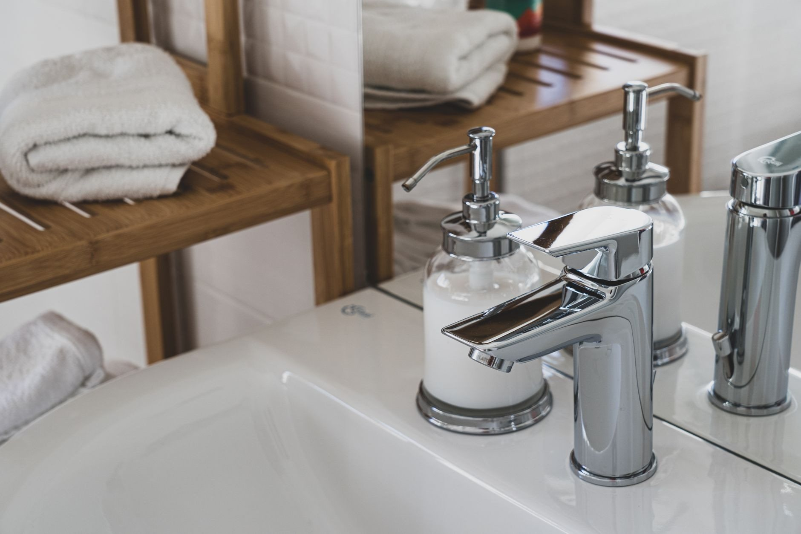
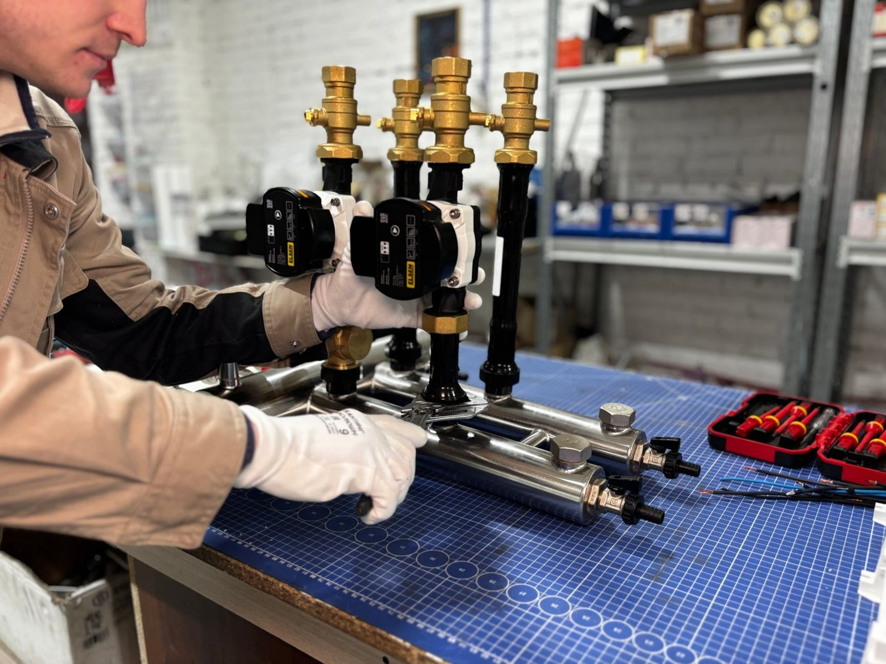
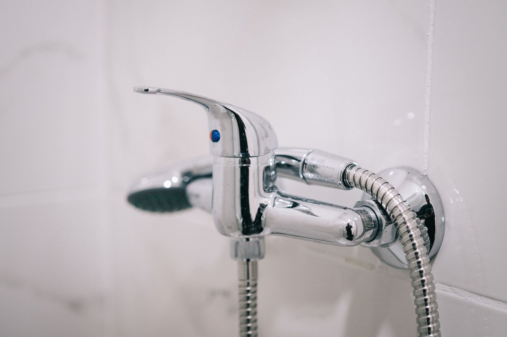
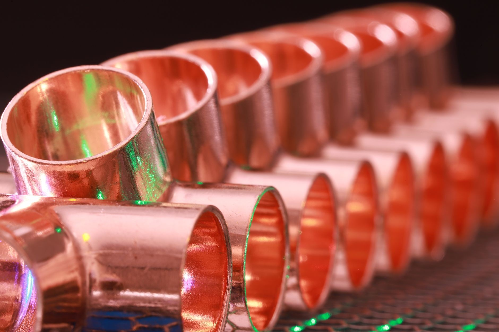
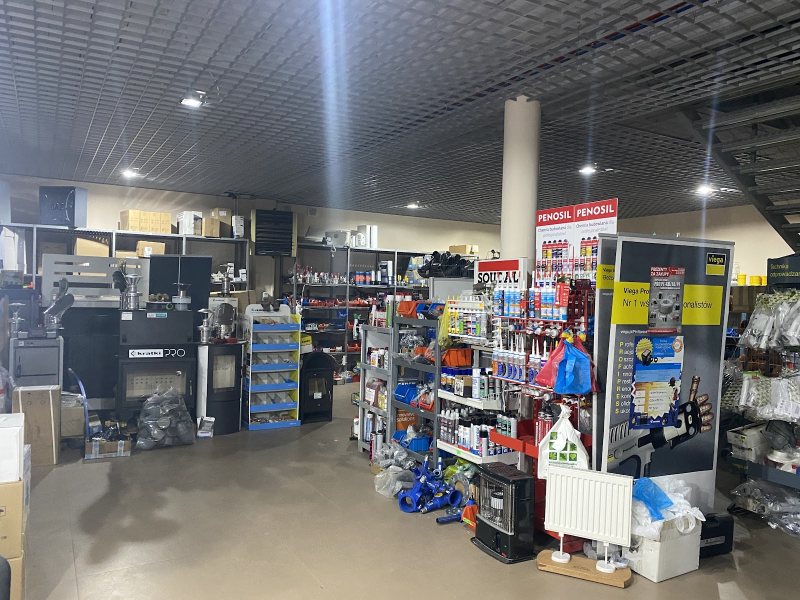

Tak wygląda to u nas na co dzień. Bez niespodzianek i bez naciągania.
Wpadnij do sklepu albo opisz robotę przez telefon - od tego zaczynamy.
Dobierzemy towar i zbierzemy wszystko za jednym razem.
Towar czeka odłożony w sklepie przy Kościuszki 64A.
Niewykorzystany materiał przyjmiemy z powrotem - piszą o tym opinie.
To, po co klienci przychodzą najczęściej - pełny asortyment opisany niżej.
Tak wygląda nasz sklep przy Kościuszki 64A w środku - a obok przykłady towaru, po który klienci wracają.




Od wielu lat zakupy hydrauliczne robię zawsze tutaj. Obsługa jest bardzo pomocna i chętnie podpowiada różne rozwiązania i dobór materiałów, nie naciągając jednocześnie na niepotrzebne koszty.Łukasz Lis
Obsługa na 6! Zakupy to jedno, ale doradztwo to drugi ogromny plus.Mirosław S.
Miła, konkretna, bezproblemowa obsługa. Nie każdy się na wszystkim zna, panowie podpowiedzą, doradzą. Nie ma problemu ze zwrotem lub wymianą. Porównując do konkurencji same plusy.kedzi
Napisz albo wpadnij - powiemy, co jest na stanie, i doradzimy, co wziąć.